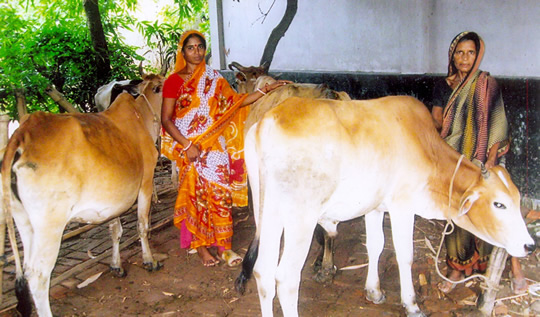
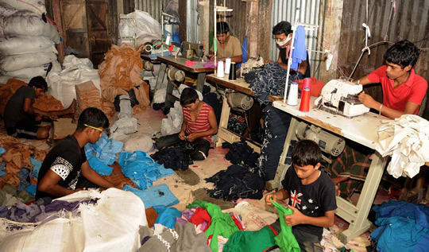
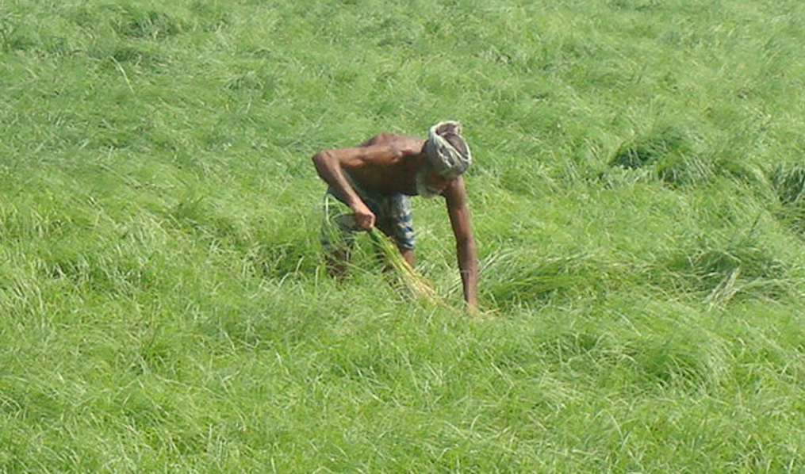
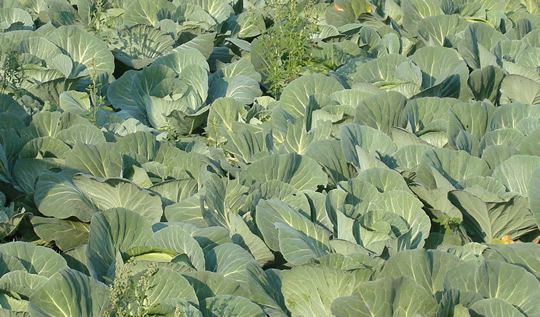
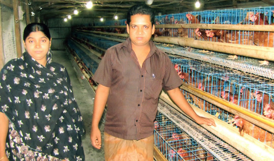

CDIP Loan Program
The endeavor of CDIP was started in 1995 with a mission to reduce poverty through providing small capital to those rural poor people who needed it most to undertake income generating activities and thereby come out of the curse of poverty. In order to achieve the above noble objectives; CDIP has been providing various types of financial and nonfinancial services as follows, see also the peformance of total credit program is attached in the MIS Report.
Rural Microcredit Loan

The loan is intended to allow rural poor households to finance their economic activities and build a strong capital base. RMC Loans are given to poor and disadvantaged households. RMC Loans range from TK. 5,000 to TK. 49,000, depending on the economic activity, the borrower’s management capacity, and demand for the product and/or services in the market. The loans are repayable within a year in 46 installments and carry 25% interest on a decline basis.
Micro-Enterprise Loan
CDIP has developed its Micro-Enterprise loan for the entrepreneurs capable of graduating from groups, as well as entrepreneurs in the community. Micro-Enterprise loans are individual loans that are assessed on the basis of household cash flow, business projections and the reputation of the borrower amongst her/his business peers/in the community. The size of the loan depends on the size of the businesses and the comparative advantages that the entrepreneurs have. With the Micro-enterprise loan borrowers are expected both to provide equity and generate wage labor employment (other than family labor). Micro-Enterprise loans range between TK.50,000 - TK.10,00,000, repayable within one year, either in 46 weekly or 12 monthly installments, depending on the cash flow pattern of various types of projects and activities.

Agriculture Loan

Bangladesh is primarily an agriculture based country and a significant majority of our population still live on agriculture.Our small farmers often do not get loan at the time of their need and as a result, our agriculture production is often adversely affected. In order to help and support small farmers, CDIP introduced agriculture loan in 2008 exclusively for agricultural activities and is designed to increase the farm activities and production for enhancing the livelihood of the poor rural households. Agricultural loans of maximum TK.50,000 are given for one year, depending on the activity, land-holding size etc., repayable in 46 installments.
Seasonal Loan
Many a time most of our farmers, traders and small entrepreneurs badly need fund for a short period of time, usually for 3 to 6 months. In order to meet up these seasonal fund requirement of our members, CDIP introduced Seasonal Loan in 2011-12 and providing maximum TK.50,000 to each client in each season.

Urban Credit Loan

With the high rate of increase of population in the urban areas of Bangladesh, the demand for different kinds of financial services are also increasing in the urban as well as suburban areas in all over Bangladesh. In view of above demand and market need, CDIP introduced “Urban Credit Loan” in 21 selected Municipality areas or otherwise commercially important urban locations at the middle of the year-2013. The Urban Credit Loan is intended to support the urban entrepreneurs and small traders to meet their requirement for loan facilities and also to strengthen their existing investment and business activities in accordance to their choice and need. However, depending on the need of entrepreneur the loan size may vary from Tk.5,000 to Tk.49,000 which is repayable in 46 weekly installments, whichever is convenient for the loanee. The Urban Credit Loan shall carry 25% interest on a decline basis.